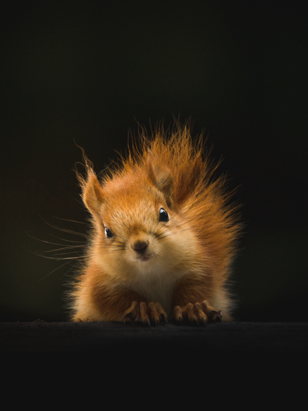
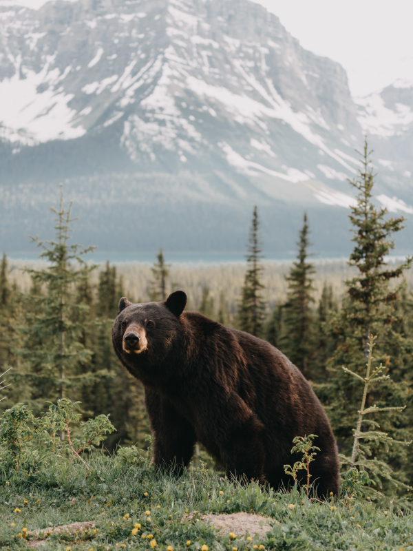

Animais Fantásticos
-

- 
- 
-

-

-

Raposa
As raposas são animais mamíferos e onívoros pertencentes à família Canidae. São vulpídeos de porte médio, caracterizados por um focinho comprido e uma cauda longa e peluda.
Também apresentam como particularidade suas pupilas ovais, semelhantes às pupilas verticais dos felídeos.
De cerca de 40 espécies reconhecidas como raposas, somente 12 pertencem ao gênero Vulpes das "raposas verdadeiras", do qual a raposa vermelha é a mais comum
Também apresentam como particularidade suas pupilas ovais, semelhantes às pupilas verticais dos felídeos.
Esquilo
Os esquilos pertencem a uma grande família de mamíferos roedores, de pequeno e médio porte, conhecida como Sciuridae. No Brasil, são também conhecidos como serelepe, caxinguelê, caxinxe, quatimirim, quatipuru, agutipuru ou acutipuru.
Na Galiza e em algumas zonas de Portugal, também são conhecido por esquio.
Também apresentam como particularidade suas pupilas ovais, semelhantes às pupilas verticais dos felídeos.
Urso
Os Ursos constituem uma família de mamíferos plantígrados, geralmente de grande porte, contendo os ursos e os pandas.
Algumas características comuns dos ursos são pelagem espessa, rabo curto, o olfato desenvolvido e as garras não retráteis.
Também apresentam como particularidade suas pupilas ovais, semelhantes às pupilas verticais dos felídeos.
Lobo
O lobo é uma espécie de mamífero canídeo do gênero Canis. É um sobrevivente da Era do Gelo, originário do Pleistoceno Superior, cerca de 300 mil anos atrás.
É o maior membro remanescente selvagem da família canidae.
Também apresentam como particularidade suas pupilas ovais, semelhantes às pupilas verticais dos felídeos.
Macaco
Macaco é um termo de origem africana utilizado como designação comum a todas as espécies de símios ou primatas antropoides. É aplicada restritivamente no Brasil aos cebídeos em geral.
No sentido estrito, "macaco" refere-se às espécies de primatas pertencentes ao género Macaca.
Também apresentam como particularidade suas pupilas ovais, semelhantes às pupilas verticais dos felídeos.
Leão
O leão [feminino: leoa] é uma espécie de mamífero carnívoro do gênero Panthera e da família Felidae.
A espécie é atualmente encontrada na África subsaariana e na Ásia, com uma única população remanescente em perigo, no Parque Nacional da Floresta de Gir, Gujarat, Índia.
Também apresentam como particularidade suas pupilas ovais, semelhantes às pupilas verticais dos felídeos.